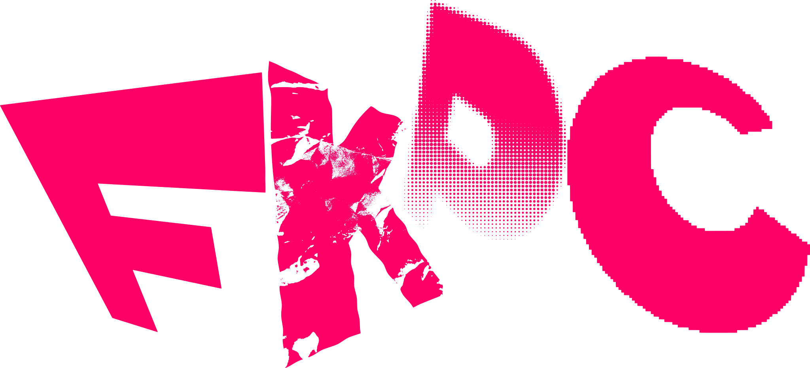

I'm 14 and I don't know what to do with my life :3Newgrounds // SoundCloud // Youtube
I put notes in a grid until it sounds nice! I've listed some of my best music below.
Click on a track to hear a preview!
Links will appear here...